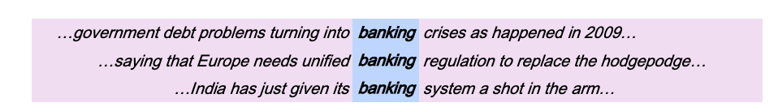
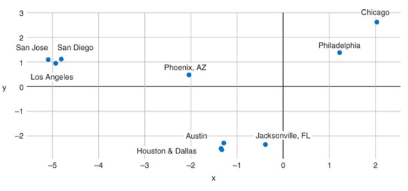
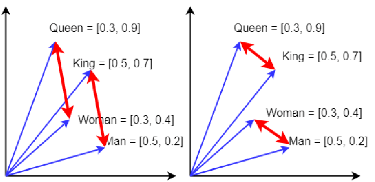
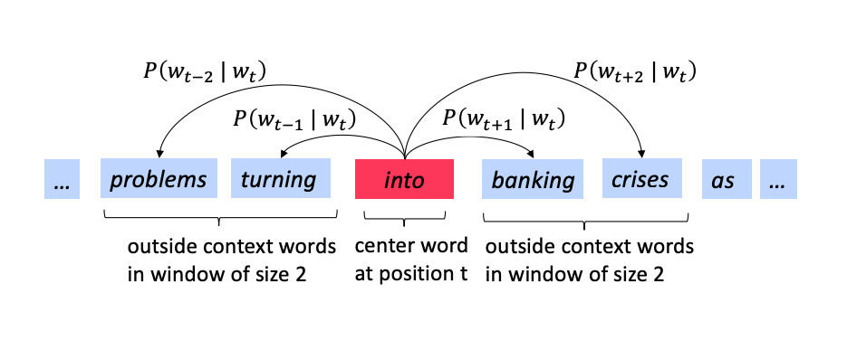
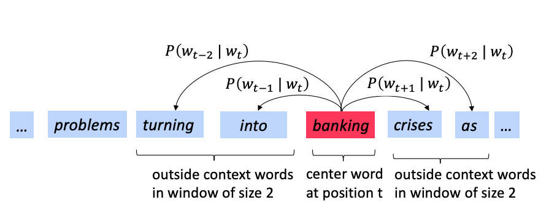
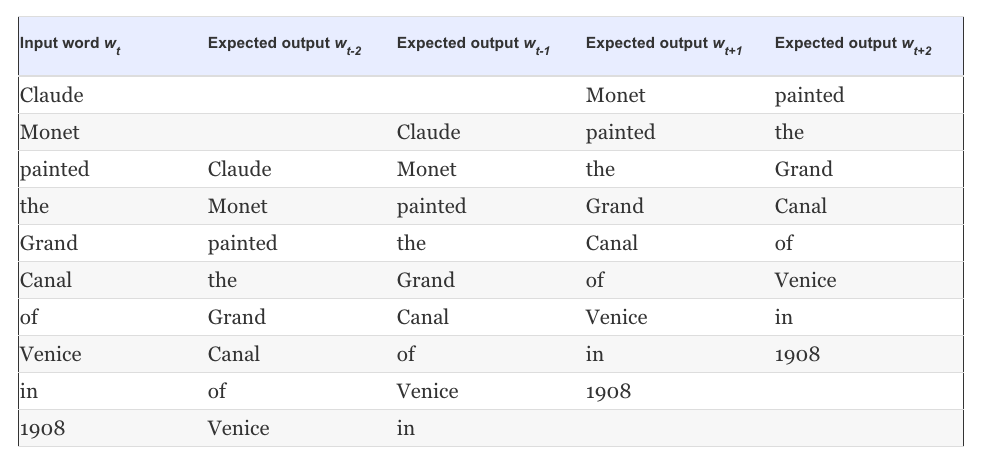
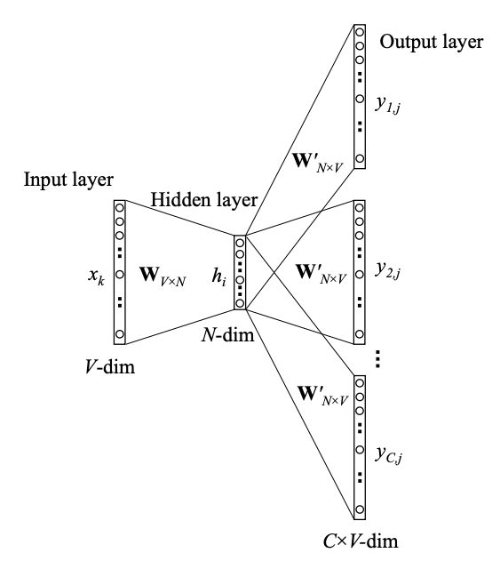

Word2Vec Embeddings#
Introduction#
In the so called classical NLP, words were treated as atomic symbols, e.g. hotel, conference, walk and they were represented with on-hot encoded (sparse) vectors e.g.
The size of the vectors is equal to the vocabulary size \(V\). These vocabularies are very long - for speech recognition we may be looking at 20K entries but for information retrieval on the web google has released vocabularies with 13 million words (1TB). In addition such representations are orthogonal to each other by construction - there is no way we can relate motel and hotel as their dot product is
One of key ideas that made NLP successful is the distributional semantics that originated from Firth’s work: a word’s meaning is given by the words that frequently appear close-by. When a word \(x\) appears in a text, its context is the set of words that appear nearby (within a fixed-size window). Use the many contexts of \(x\) to build up a representation of \(x\).

Distributional similarity representations - banking is represented by the words left and right across all sentences of our corpus.
This is the main idea behind word2vec word embeddings (representations) that we address next.
Before we deal with embeddings though its important to address a conceptual question:
Is there some ideal word-embedding space that would perfectly map human language and could be used for any natural-language-processing task? Possibly, but we have yet to compute anything of the sort. More pragmatically, what makes a good word-embedding space depends heavily on your task: the perfect word-embedding space for an English-language movie-review sentiment-analysis model may look different from the perfect embedding space for an English-language legal–document-classification model, because the importance of certain semantic relationships varies from task to task. It’s thus reasonable to learn a new embedding space with every new task.
Features of Word2Vec embeddings#
In 2012, Thomas Mikolov, an intern at Microsoft, found a way to encode the meaning of words in a modest number of vector dimensions \(d\). Mikolov trained a neural network to predict word occurrences near each target word. In 2013, once at Google, Mikolov and his teammates released the software for creating these word vectors and called it word2vec.
 word2vec generated embedding for the word
word2vec generated embedding for the word banking in d=8 dimensions
Here is a visualization of these embeddings in the re-projected 3D space (from \(d\) to 3). Try searching for the word “truck” for the visualizer to show the distorted neighbors of this work - distorted because of the 3D re-projection. In another example, word2vec embeddings of US cities projected in the 2D space result in poor topological but excellent semantic mapping which is exactly what we are after.
 Semantic Map produced by word2vec for US cities
Another classic example that shows the power of word2vec representations to encode analogies, is classical king + woman − man ≈ queen example shown below.

Classic queen example where king − man ≈ queen − woman, and we can visually see that in the red arrows. There are 4 analogies one can construct, based on the parallel red arrows and their direction. This is slightly idealized; the vectors need not be so similar to be the most similar from all word vectors. The similar direction of the red arrows indicates similar relational meaning.
So what is the more formal description of the word2vec algorithm? We will focus on one of the two computational algorithms1 - the skip-gram method and use the following diagrams as examples to explain how it works.
  In the skip-gram we predict the context given the center word.We need to calculate the probability \(p(w_{t+j} | w_t)\).
We go through each position \(t\) in each sentence and for the center word at that location \(w_t\) we predict the outside words \(w_{t+j}\) where \(j\) is over a window of size \(C = |\{ j: -m \le j \le m \}|-1\) around \(w_t\).
For example, the meaning of banking is predicting the context (the words around it) in which banking occurs across our corpus.
The term prediction points to the regression section and the maximum likelihood principle. We start from the familiar cross entropy loss and architect a neural estimator that will minimize the distance between \(\hat p_{data}\) and \(p_{model}\). The negative log likelihood was shown to be:
where \(|V|\) is the size of the vocabulary (words).\(|V|\) could be very large, e.g. 1 billion words. The ML principle, powered by a corresponding algorithm, will result in a model that for each word at the input (center) will predict the context words around it. The model parameters \(\theta\) will be determined at the end of the training process that uses a training dataset easily generated from our corpus assuming we fix the context window \(m\). Lets see an example:
 Training data generation for the sentence ‘Claude Monet painted the Grand Canal of Venice in 1908’
So the question now becomes how to calculate \(p(w_{t+j} | w_t; \theta)\) and we do so with the network architecture below.
 Conceptual architecture of the neural network that learns word2vec embeddings. The text refers to the hidden layer dimensions as \(d\) rather than \(N\) and hidden layer \(\mathbf z\) rather than \(\mathbf h\).
The network accepts the center word and via an embedding layer \(\mathbf W_{|V| \times d}\) produces a hidden layer \(\mathbf z\). The same hidden layer output is then mapped to an output layer of size \(C \times |V|\), via \(\mathbf W^\prime_{d \times |V|}\). One mapping is done for each of the words that we include in the context. In the output layer we then convert the metrics \(\mathbf z^\prime\) to a probability distribution \(\hat{\mathbf y}\) via the softmax. This is summarized next:
The parameters $\( \theta = \{\mathbf W, \mathbf W^{\prime} \} \)$ will be optimized via an optimization algorithm (from the usual SGD family).
Training for large vocabularies can be quite computationally intensive. At the end of training we are then able to store the matrix \(\mathbf W\) and load it during the parsing stage of the NLP pipeline. In practice we use a loss functions that avoids computing losses that go over the vocabulary size \(|V|\) and instead we pose the problem as a logistic regression problem where the positive examples are the (center,context) word pairs and the negative examples are the (center, random) word pairs. This is called negative sampling and the interested reader can read more here.
Warning
Mind the important difference between learning a representation that from the context across the corpus and the application of that representation. Word2Vec are applied context-free. After training, a single \(\mathbf W\) matrix will be used. This means that the word ‘bank’ will be encoded using the same dense vector irrespectively when it is located close to ‘river’ or ‘food’ or ‘deposit’.
Contextual representations are addressed in a separate section.